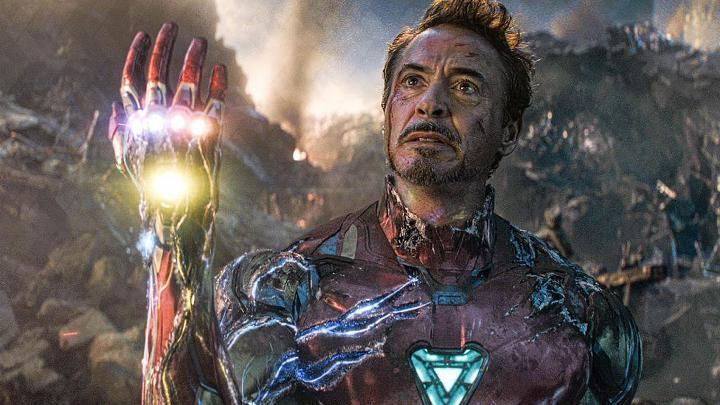
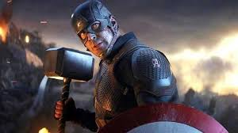
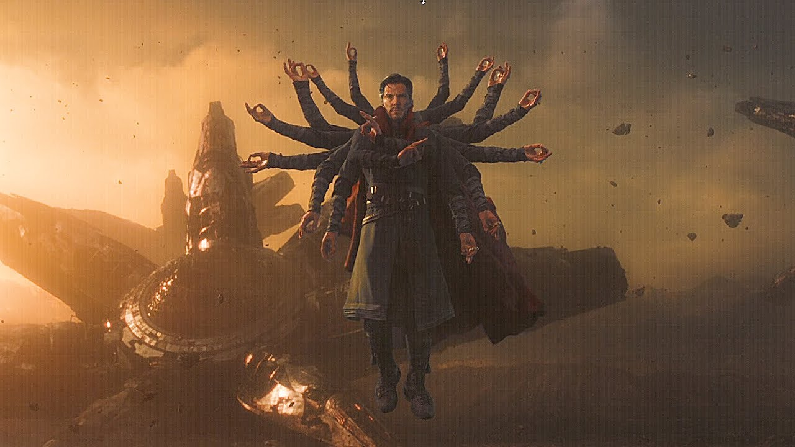
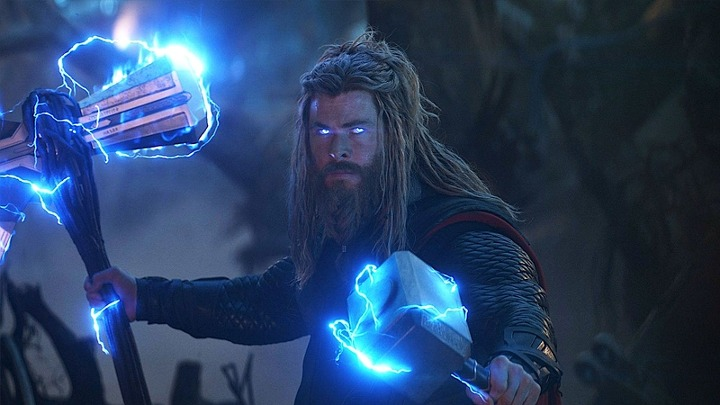
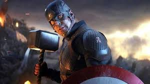
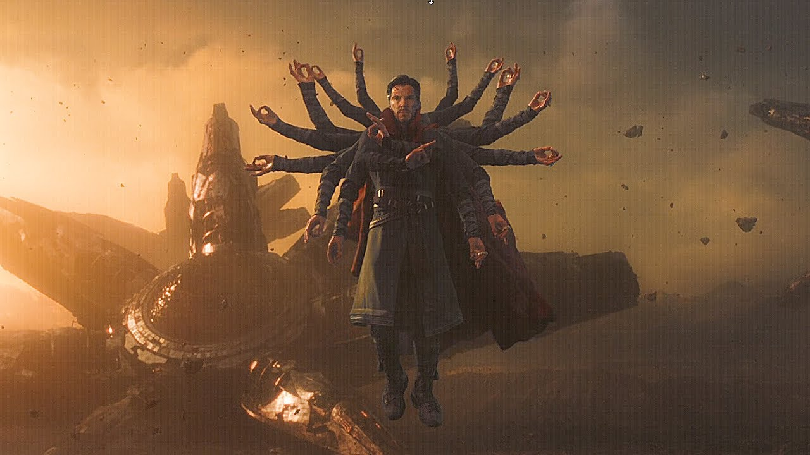
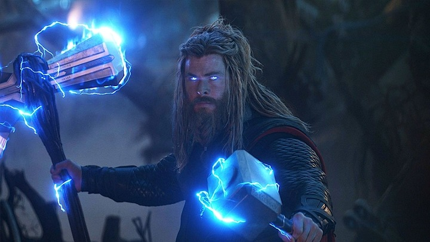

스파이더맨 : 노 웨이 홈

감독 : 앤소니 루소, 조 루소
제작 : 케빈 파이기
배우 : 로버트 다우니 주니어, 크리스 엔반스, 톰 홀랜드, 마크 러팔로, 크리스 헴스워스, 스칼렛 요한슨, 제이미 레너, 베네딕트 컴버배치, 엘리자베스 올슨, 채드윅 보스만, 톰 히들스턴 등등
 

줄거리
타노스가 우주의 균형을 맞추기 위해 인피니티 건틀렛을 사용하고 모든 생명체의 절반이 타노스의 핑거스냅으로 사라지게 되었다. 캡틴마블은 우주에서 떠돌고 있는 토니 스타크와 네뷸라를 지구로 데려온다. 토니를 제외한 브루스 배너, 스티브 로저스, 토르, 로켓, 나타샤 로마노바, 제임스 로드 등 남아있는 어벤져스 멤버들은 타노스가 가지고 있는 인피니티 스톤을 이용해 모든 우주 생명체에 절반을 되돌리기 위해 타노스를 찾고 타노스를 기습하는데 타노스는 이미 스톤을 파괴하는데 스톤을 써버린 상태였다. 화가 난 토르는 스톰 브레이커를 이용해 타노스의 목을 베어버린다. 그로부터 5년 뒤, 앤트맨은 쥐가 양자 터널 버튼을 눌러준 덕분에 양자 영역에서 빠져나오게 된다. 그는 현실세계와 양자 영역이 흐르는 시간대가 다르다는 것을 이용해 시간여행을 할 수 있을지도 모른다는 가설을 세우고 어벤져스 멤버들중 스티브 로저스, 나타샤 로마노바와 함께 토니 스타크를 찾아간다. 스타크에게 현재의 타노스가 벌인 일을 되돌리기 위해 과거로 가서 인피니티 스톤들을 되찾는 걸 도와달라고 요청하지만 스타크는 딸 모건을 잃을까 두려워 도움 요청을 거절한다. 하지만 토니 스타크는 이미 과거로 시간여행을 할 수 있는 방법을 찾고 있는 상태였고, 결과적으로 그 방법을 찾아내었다. 시간여행이 가능하다는 걸 확신하게 된 후 아내인 페퍼 포츠와 이야기를 나눈 뒤, 마음을 정하고 시간여행에 대한 어려움을 겪고 있는 남은 어벤져스 멤버들과 합류하게 된다. 여기서 토니는 스티브에게 방패를 다시 선물하게 된다. 배너는 과거를 바꾸는 것이 현재의 자신들에게 영향을 주지 않고, 변화들은 대신에 평행 세계를 만든다고 알려준다. 배너와 로켓은 타노스를 막지 못한 것에 회한이 생겨 비만 상태의 알코올 중독이 되어버린 토르를 데려가기 위해, 노르웨이에 세워진 뉴 아스가르드(새로운 아스가르드) 난민들의 터전인 뉴 아스가르드로 간다. 도쿄에선, 로마노프가 가족이 사라진 뒤에 무자비한 로난이 되어버린 클린트 바튼을 데려온다. 배너, 랭, 로저스, 스타크는 2012년 뉴욕으로 시간 여행을 간다. 배너는 생텀을 방문하여 에이션트 원에게 타임 스톤을 자신에게 줘야한다고 설득한다. 로저스는 마인드 스톤을 성공적으로 회수하지만, 스타크와 랭은 의도하지 않은 실수로 2012년의 로키가 스페이스 스톤을 갖고 도망치게 된다.핌 입자가 돌아갈 양 밖에 남지 않은 상황에서 스페이스 스톤을 가지고 가기 위해 로저스와 스타크는 1970년 쉴드의 본부로 시간 여행을 가서 스페이스 스톤을 얻고, 이 과정에서 젊은 하워드 스타크와 마주쳤다. 한편 로저스는 현재로 돌아가기 위해서 행크 핌에게 핌 입자를 훔친다. 로켓과 토르는 2013년 아스가르드로 가서 제인 포스터에게서 리얼리티 스톤(에테르)을 추출해내고, 또한 토르의 망치 묠니르도 되찾는다. 네뷸라와 로즈는 2014년 모라그로 시간 여행을 가서 피터 퀼이 훔치기 전에 파워 스톤을 가져간다. 로즈는 파워 스톤과 함께 현재로 돌아가지만, 네뷸라는 자신의 기억이 과거의 자신과 연결되면서 무능력하게 된다. 이 연결로, 2014년의 타노스는 미래에 일어난 성공과 그것을 저지하려 하는 어벤져스의 시도를 알게 된다. 타노스는 현재의 네뷸라를 생포하고 과거의 네뷸라를 미래의 네뷸라로 변장시켜 현재로 보낸다. 바튼과 로마노프는 보르미르로 향했고, 그곳에서 소울 스톤의 수호자 레드 스컬은 사랑하는 이를 바쳐야지만 소울 스톤을 얻을 수 있다고 밝힌다. 블랙위도우는 자기 자신을 희생해서, 바튼이 소울 스톤을 얻게 해준다. 현재로 돌아온 어벤져스들은 블랙위도우의 장례식을 치르고, 인피니티 스톤들을 스타크가 만든 나노 건틀렛에 맞추고, 배너는 타노스가 소멸시킨 이들을 되살리기 위해 핑거스냅을 한다. 과거의 네뷸라는 과거의 타노스와 그의 전투선들을 현재로 데려오도록 시간 여행 장치를 가동하고, 타노스는 인피니티 스톤으로 우주를 완전히 파괴하고 재건하도록 계획을 세우고, 어벤저스를 공격한다. 네뷸라는 타노스를 배신하도록 과거의 가모라를 설득하고, 과거의 자신을 죽인다. 묠니르까지 들어올린 로저스는 타노스와 싸우지만 역부족이었다. 그때 되살아난 닥터 스트레인지는 타노스와 그의 군대에 싸우기 위해 다른 마법사들, 되살아난 어벤져스와 가디언즈 오브 갤럭시뿐만 아니라 와칸다와 아스가르드의 군대, 라바저스 등과 포털을 열고 등장한다. 타노스의 무차별 사격을 저지하려 우주선을 부수며 캡틴 마블까지 등장하고 타노스는 건틀렛을 차지하지만, 스타크가 인피니티 스톤들을 빼돌리고 핑거스냅을 해 타노스와 그의 군대는 모두 먼지로 변하게 되고 핑거스냅을 한 후유증으로 스타크는 사망한다. 스타크의 장례식 이후, 토르는 발키리를 뉴 아스가르드의 통치자로 임명하고 2014년의 가모라를 찾는 퀼이 있는 가디언즈 오브 갤럭시에 합류한다. 로저스는 인피니티 스톤들을 그 시간 때 원래 있던 장소로 되돌리고, 과거에 남는다. 현재에서, 노령의 로저스는 자신의 새 방패를 팔콘에게 넘겨준다.